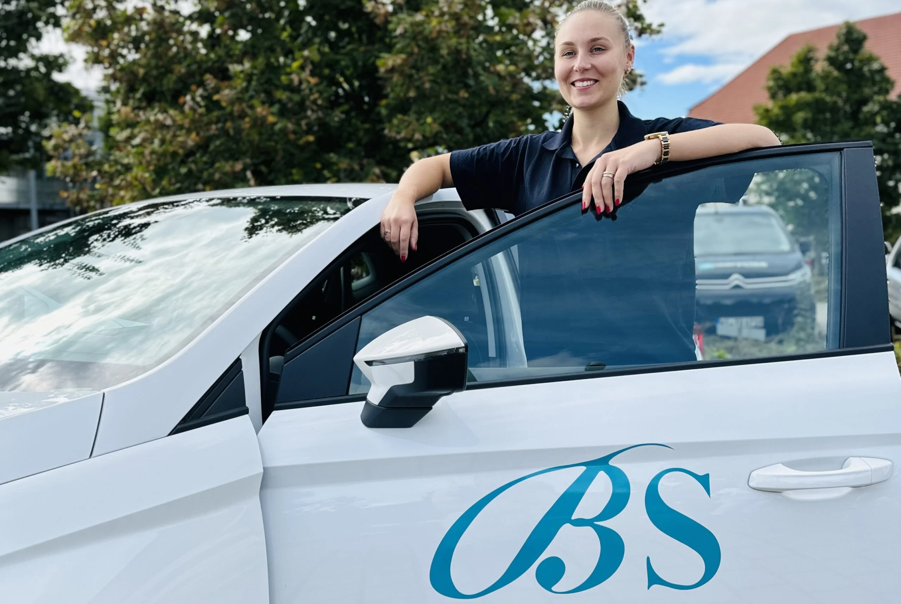
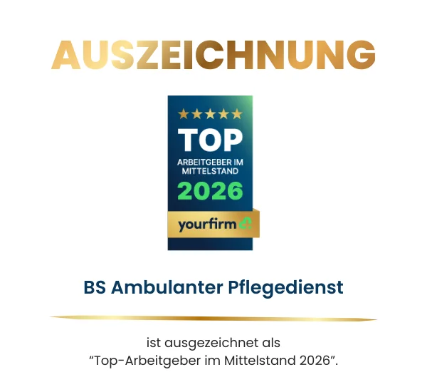

Frau Baader
Pflegedienstleitung
Wir sind mehr als ein Team, wir sind eine Familie, die sich mit Herz und Erfahrung um Ihr Wohl kümmert. Mehrfach ausgezeichnet als Top-Arbeitgeber durch den Yourfirm Award.
2013 gründete Britta Schmid, die zuvor selbst als examinierte Krankenschwester in einem ambulanten Dienst und einem Pflegeheim arbeitete, das Unternehmen BS ambulanter Pflegedienst. Ihr Ziel war es, die besten Eigenschaften eines Pflegeheims und der ambulanten Pflege Zuhause zu vereinen. Keine zum Überlaufen gefüllten Tourenpläne, bei denen es keine Zeit gab Mensch zu sein.

Wir sind eine Gemeinschaft aus Pflegekräften, Verwaltung und Betreuung. BS Ambulanter Pflegedienst ist die Summe aus jedem der 100 Mitarbeiter. Ein bunter Mix aus Fachkräften, Quereinsteigern und empathischen Kräften im Hintergrund bildet die Basis unseres Leitmotivs.

Pflegedienstleitung
Pflegedienstleitung
Abrechnung und Verwaltung
Abrechnung und Verwaltung
Vertragswesen
Rechnungswesen
Personalmanagement
Verordnungen und Hilfsmittel
Verordnungen und Hilfsmittel
Geschäftsführung
Geschäftsleitung
Geschäftsleitung
Schreiben Sie uns. Wir hören zu und finden gemeinsam die passende Lösung.
Kontakt